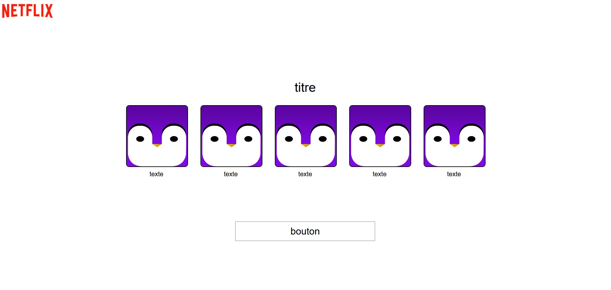
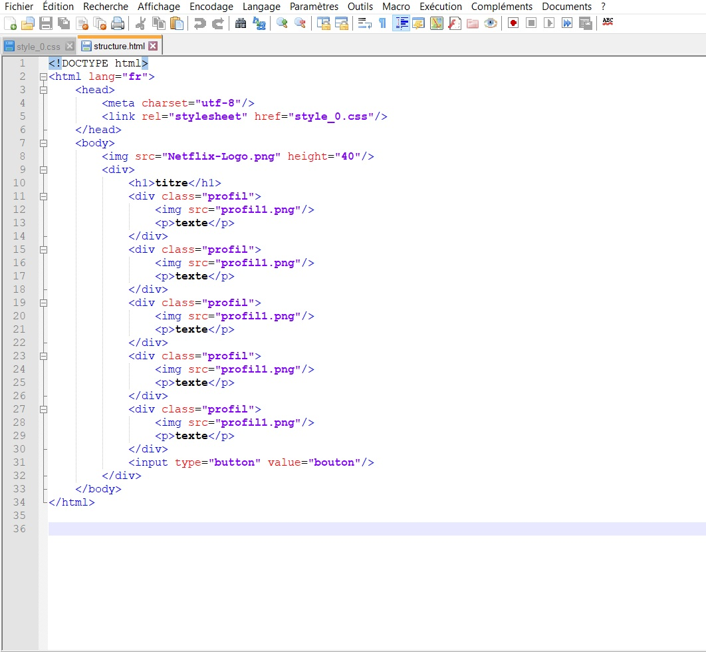
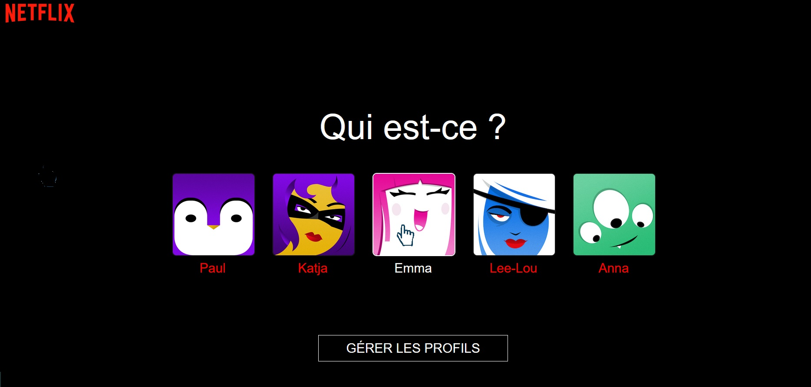

Exercice n°3
Le but est de réaliser la page d’accueil du site Netflix :
Nous allons partir de la structure suivante :

Pour cela récupérer les fichiers suivants :
Fichier HTML : structure
Fichier CSS : style
Images : image 1, image 2, image 3, image 4, image 5.
Sauvegardez les fichiers dans le même dossier, puis ouvrez les fichiers Structure et Style sous Notepad++ :

Travail demandé :
Modifiez le fichier structure.html sous Notepad++ pour obtenir les différents profils de la page Netflix (images et textes).
Modifiez le fichier style_0.css sous Notepad++ pour obtenir la page Netflix suivante (les bords des images sont arrondis, lorsque l'on passe la souris sur le bouton "GERER LES PROFILS" ou l'image d'un profil le pointeur se transforme en main et les lettres changent de couleur......) :
Vérifiez le résultat obtenu en rafraîchissant votre page HTML :
1-Soit vous cliquez sur le logo "Actualiser cette page" en haut à gauche de votre navigateur.-
2-Soit vous effectuez un Ctrl + F5 : maintenez la touche Ctrl enfoncée et appuyez sur la touche F5 en haut de votre clavier.

Créé avec HelpNDoc Personal Edition: Produire des aides en ligne pour les applications Qt
{kind=link}
{kind=link}
{kind=link}
{kind=link}
{kind=link}